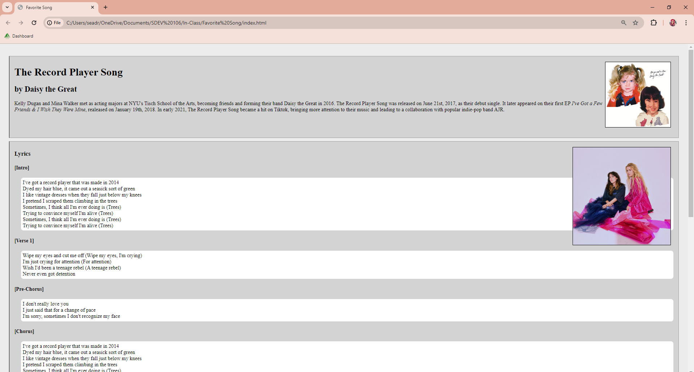
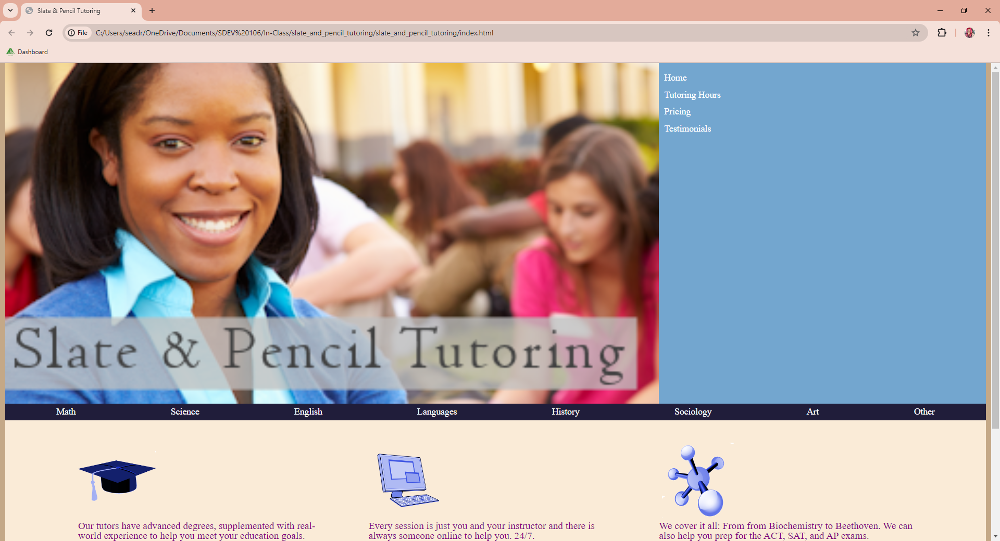
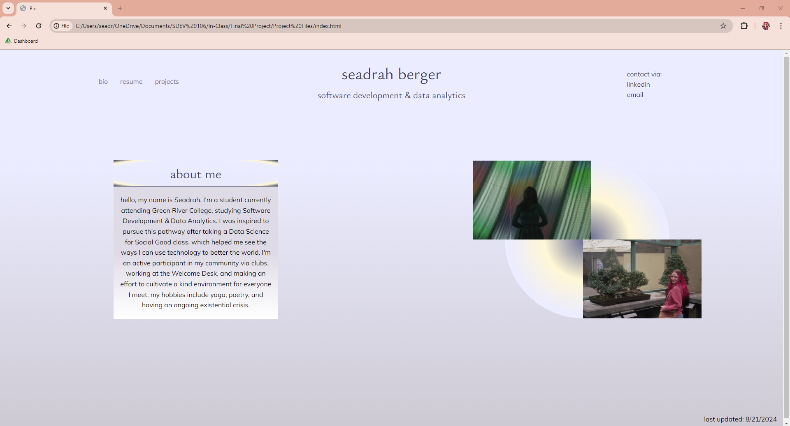

favorite song
this website detailed the lyrics of my favorite song.
slate & pencil tutoring
this website posed the greatest challenge (until this one).
this project
hey, lets get meta! this project turned out pretty cool.
this website detailed the lyrics of my favorite song.
this website posed the greatest challenge (until this one).
hey, lets get meta! this project turned out pretty cool.